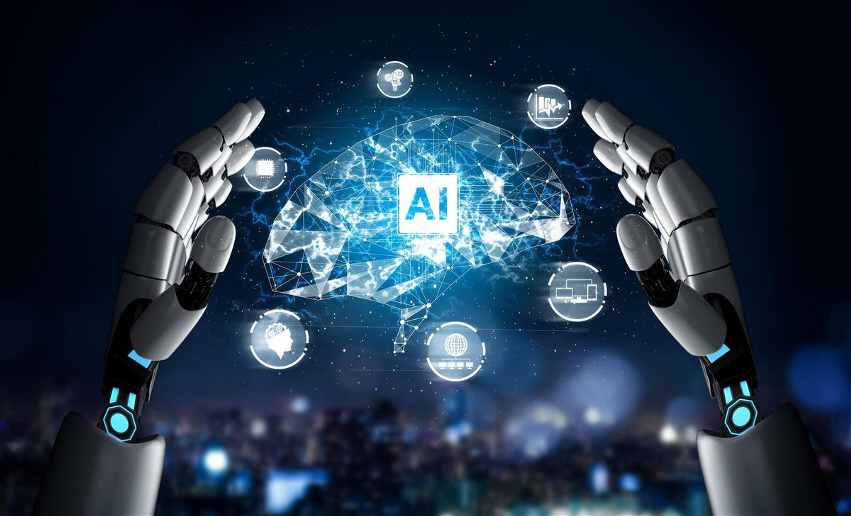

The long-term economic effects of AI are uncertain. A survey of economists showed disagreement about whether the increasing use of robots and AI will cause a substantial increase in long-term unemployment, but they generally agree that it could be a net benefit, if productivity gains are redistributed. A 2017 study by PricewaterhouseCoopers sees the People’s Republic of China gaining economically the most out of AI with 26,1% of GDP until 2030. A February 2020 European Union white paper on artificial intelligence advocated for artificial intelligence for economic benefits, including "improving healthcare (e.g. making diagnosis more precise, enabling better prevention of diseases), increasing the efficiency of farming, contributing to climate change mitigation and adaptation, [and] improving the efficiency of production systems through predictive maintenance", while acknowledging potential risks.
The relationship between automation and employment is complicated. While automation eliminates old jobs, it also creates new jobs through micro-economic and macro-economic effects. Unlike previous waves of automation, many middle-class jobs may be eliminated by artificial intelligence; The Economist states that "the worry that AI could do to white-collar jobs what steam power did to blue-collar ones during the Industrial Revolution" is "worth taking seriously". Subjective estimates of the risk vary widely; for example, Michael Osborne and Carl Benedikt Frey estimate 47% of U.S. jobs are at "high risk" of potential automation, while an OECD report classifies only 9% of U.S. jobs as "high risk". Jobs at extreme risk range from paralegals to fast food cooks, while job demand is likely to increase for care-related professions ranging from personal healthcare to the clergy. Author Martin Ford and others go further and argue that many jobs are routine, repetitive and (to an AI) predictable; Ford warns that these jobs may be automated in the next couple of decades, and that many of the new jobs may not be "accessible to people with average capability", even with retraining. Economists point out that in the past technology has tended to increase rather than reduce total employment, but acknowledge that "we're in uncharted territory" with AI.
The potential negative effects of AI and automation were a major issue for Andrew Yang's 2020 presidential campaign in the United States. Irakli Beridze, Head of the Centre for Artificial Intelligence and Robotics at UNICRI, United Nations, has expressed that "I think the dangerous applications for AI, from my point of view, would be criminals or large terrorist organizations using it to disrupt large processes or simply do pure harm. [Terrorists could cause harm] via digital warfare, or it could be a combination of robotics, drones, with AI and other things as well that could be really dangerous. And, of course, other risks come from things like job losses. If we have massive numbers of people losing jobs and don't find a solution, it will be extremely dangerous. Things like lethal autonomous weapons systems should be properly governed — otherwise there's massive potential of misuse."
Risks of narrow AI
Widespread use of artificial intelligence could have unintended consequences that are dangerous or undesirable. Scientists from the Future of Life Institute, among others, described some short-term research goals to see how AI influences the economy, the laws and ethics that are involved with AI and how to minimize AI security risks. In the long-term, the scientists have proposed to continue optimizing function while minimizing possible security risks that come along with new technologies.
Some are concerned about algorithmic bias, that AI programs may unintentionally become biased after processing data that exhibits bias. Algorithms already have numerous applications in legal systems. An example of this is COMPAS, a commercial program widely used by U.S. courts to assess the likelihood of a defendant becoming a recidivist. ProPublica claims that the average COMPAS-assigned recidivism risk level of black defendants is significantly higher than the average COMPAS-assigned risk level of white defendants.
Risks of general AI
Physicist Stephen Hawking, Microsoft founder Bill Gates, history professor Yuval Noah Harari, and SpaceX founder Elon Musk have expressed concerns about the possibility that AI could evolve to the point that humans could not control it, with Hawking theorizing that this could "spell the end of the human race".
In his book Superintelligence, philosopher Nick Bostrom provides an argument that artificial intelligence will pose a threat to humankind. He argues that sufficiently intelligent AI, if it chooses actions based on achieving some goal, will exhibit convergent behavior such as acquiring resources or protecting itself from being shut down. If this AI's goals do not fully reflect humanity's—one example is an AI told to compute as many digits of pi as possible—it might harm humanity in order to acquire more resources or prevent itself from being shut down, ultimately to better achieve its goal. Bostrom also emphasizes the difficulty of fully conveying humanity's values to an advanced AI. He uses the hypothetical example of giving an AI the goal to make humans smile to illustrate a misguided attempt. If the AI in that scenario were to become superintelligent, Bostrom argues, it may resort to methods that most humans would find horrifying, such as inserting "electrodes into the facial muscles of humans to cause constant, beaming grins" because that would be an efficient way to achieve its goal of making humans smile. In his book Human Compatible, AI researcher Stuart J. Russell echoes some of Bostrom's concerns while also proposing an approach to developing provably beneficial machines focused on uncertainty and deference to humans, possibly involving inverse reinforcement learning.
Concern over risk from artificial intelligence has led to some high-profile donations and investments. A group of prominent tech titans including Peter Thiel, Amazon Web Services and Musk have committed $1 billion to OpenAI, a nonprofit company aimed at championing responsible AI development. The opinion of experts within the field of artificial intelligence is mixed, with sizable fractions both concerned and unconcerned by risk from eventual superhumanly-capable AI. Other technology industry leaders believe that artificial intelligence is helpful in its current form and will continue to assist humans. Oracle CEO Mark Hurd has stated that AI "will actually create more jobs, not less jobs" as humans will be needed to manage AI systems. Facebook CEO Mark Zuckerberg believes AI will "unlock a huge amount of positive things," such as curing disease and increasing the safety of autonomous cars. In January 2015, Musk donated $10 million to the Future of Life Institute to fund research on understanding AI decision making. The goal of the institute is to "grow wisdom with which we manage" the growing power of technology. Musk also funds companies developing artificial intelligence such as DeepMind and Vicarious to "just keep an eye on what's going on with artificial intelligence. I think there is potentially a dangerous outcome there."
For the danger of uncontrolled advanced AI to be realized, the hypothetical AI would have to overpower or out-think all of humanity, which a minority of experts argue is a possibility far enough in the future to not be worth researching. Other counterarguments revolve around humans being either intrinsically or convergently valuable from the perspective of an artificial intelligence.